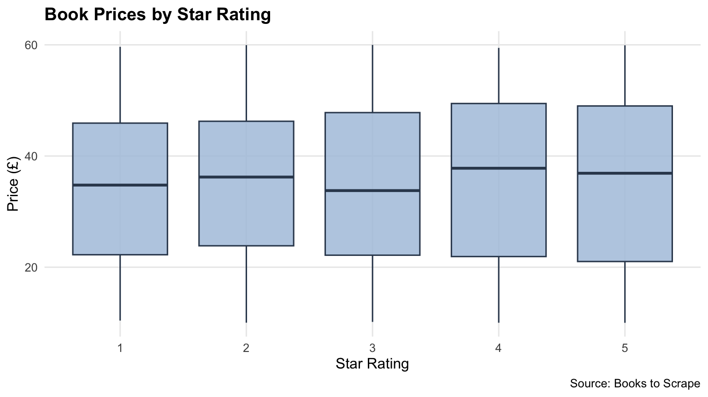

Show R Code
robotstxt::paths_allowed(
"https://books.toscrape.com/catalogue/"
)
session <- polite::bow(
"https://books.toscrape.com/",
user_agent = "EPPS6302 student workshop",
delay = 5
)
sessionStatic HTML, Dynamic Websites, and JSON APIs
Sixi Chen
This workshop explores two approaches to collecting web data in R.
Block A uses polite and rvest to collect book information from static HTML pages.
Block B examines a JavaScript-rendered website and uses an API to retrieve structured JSON data.
The main objectives are to understand how web data are generated, transform them into tidy dataframes, and validate the collected records.
Raw data were cached locally so that the report can be reproduced without repeatedly requesting the websites.
The website Books to Scrape is designed for practicing web scraping.
Before collecting data, the crawler checks the site’s robots.txt rules and establishes a polite session with a five-second delay between requests.
The polite package helps manage access to the website while respecting its crawling rules and request intervals.
Checking robots.txt is an important step, although it does not replace reviewing a website’s Terms of Service.
The next step extracts individual book records from the HTML document.
parse_books <- function(pg) {
pods <- html_elements(
pg,
"article.product_pod"
)
tibble(
title = pods |>
html_element("h3 a") |>
html_attr("title"),
price = pods |>
html_element(".price_color") |>
html_text2(),
rating = pods |>
html_element(".star-rating") |>
html_attr("class"),
stock = pods |>
html_element(".availability") |>
html_text2()
)
}
pg1 <- polite::nod(
session,
"catalogue/page-1.html"
) |>
polite::scrape()
books1 <- parse_books(pg1)
books1The CSS selector article.product_pod identifies each book container. Other selectors extract the book title, price, rating, and availability.
The output is a tibble in which each row represents one book.
The original HTML contains prices and ratings as text.
These values need to be converted into appropriate data types before analysis.
stars <- c(
"One",
"Two",
"Three",
"Four",
"Five"
)
clean_books <- function(df) {
df |>
mutate(
price = readr::parse_number(price),
rating = match(
stringr::str_remove(rating, "star-rating "),
stars
),
in_stock = stringr::str_detect(
stock,
"In stock"
)
) |>
select(-stock)
}
books <- clean_books(books_raw)After cleaning:
price is numeric.rating is an integer from 1 to 5.in_stock is a logical variable (TRUE or FALSE).The function below requests a page, extracts its book records, and adds the page number.
get_page <- function(i) {
polite::nod(
session,
paste0("catalogue/page-", i, ".html")
) |>
polite::scrape() |>
parse_books() |>
dplyr::mutate(page = i)
}
books_raw <- purrr::map(
1:50,
get_page
) |>
dplyr::bind_rows()
dir.create(
"data",
showWarnings = FALSE
)
readr::write_csv(
books_raw,
"data/books_raw.csv"
)The map() function applies get_page() to all 50 page numbers.
The resulting list of tibbles is combined into a single dataframe using bind_rows().
The raw dataset is saved as a CSV file to avoid repeated requests during analysis and report rendering.
Data collection is not complete simply because the code runs without errors.
The dataset should be checked for missing values, appropriate data types, and expected record counts.
| Quality Check | Result |
|---|---|
| Total book records | 1000 |
| Pages collected | 50 |
| Missing titles | 0 |
| Missing prices | 0 |
| Missing ratings | 0 |
| Unique titles | 999 |
Each page is expected to contain 20 books.
| Pages Checked | Minimum Records per Page | Maximum Records per Page | Pages with 20 Records |
|---|---|---|---|
| 50 | 20 | 20 | 50 |
This check helps identify missing or incomplete pages that might otherwise go unnoticed.
We compare the average book prices across the five star-rating categories.
| Star Rating | Average Price (£) | Number of Books |
|---|---|---|
| 1 | 34.56 | 226 |
| 2 | 34.81 | 196 |
| 3 | 34.69 | 203 |
| 4 | 36.09 | 179 |
| 5 | 35.37 | 196 |

The average prices are relatively similar across rating categories. These results are descriptive and do not establish a causal relationship between ratings and prices.
The most fragile part of the scraping process is the dependence on CSS selectors.
For example, if the website changes the class name product_pod, the selector article.product_pod may no longer identify book records correctly.
This could produce missing observations without an obvious error message.
Checking the number of records per page and caching the raw data help make the collection process more reliable and reproducible.
Some websites include their content directly in the HTML returned by the server.
Others use JavaScript to load content after the initial page has opened.
The two versions of Quotes to Scrape illustrate this difference:
The expected results are 10 quotes on the regular HTML page and 0 on the JavaScript-rendered page.
The difference illustrates that read_html() reads the initial HTML but does not execute JavaScript.
Instead of relying immediately on browser automation, we can inspect the network requests made by the website and identify its data endpoint.
For this exercise, the API endpoint is:
https://quotes.toscrape.com/api/quotes?page=1
The following function requests one page of JSON data.
The API response includes the following fields:
has_next: whether another page is available.page: the current page number.quotes: the quote records.tag: the current tag selection.top_ten_tags: the website’s popular tags.Unlike the HTML scraping approach, the API returns structured JSON data.
The API response contains nested lists.
For example, each quote includes author information, tags, and quote text. The author information itself contains several fields.
The following function converts this nested structure into a rectangular dataframe.
The transformation has three important steps:
unnest_wider() expands the quote fields into separate columns.hoist() extracts selected values from the nested author list.map_chr() converts each quote’s tags into a single character value.The final dataframe has one row per quote and separate columns for the text, author name, author identifier, and tags.
Rather than assuming a fixed number of pages, the API’s has_next field determines when data collection should stop.
The process retrieves each page, keeps the quote records, and combines them into one tibble.
The collected data are cached as data/quotes.csv.
| Quality Check | Result |
|---|---|
| Total quote records | 100 |
| Missing quote texts | 0 |
| Missing author names | 0 |
| Unique quote texts | 100 |
| Unique authors | 50 |
The following table displays five records from the collected dataset.
| Author | Quote |
|---|---|
| Albert Einstein | “The world as we have created it is a process of our thinking. It cannot be changed without changing our thinking.” |
| J.K. Rowling | “It is our choices, Harry, that show what we truly are, far more than our abilities.” |
| Albert Einstein | “There are only two ways to live your life. One is as though nothing is a miracle. The other is as though everything is a miracle.” |
| Jane Austen | “The person, be it gentleman or lady, who has not pleasure in a good novel, must be intolerably stupid.” |
| Marilyn Monroe | “Imperfection is beauty, madness is genius and it’s better to be absolutely ridiculous than absolutely boring.” |
The full dataset is retained in the CSV file. Displaying a sample keeps the report readable without discarding observations.
Browser automation provides an alternative for accessing content loaded through JavaScript.
The read_html_live() function opens a live browser session and allows R to inspect the rendered page.
This approach is useful when data cannot be accessed through a suitable API or static HTML.
However, browser automation generally requires more resources and is more sensitive to page-loading behavior.
The two collection methods operate at different levels.
| Feature | Direct API | Browser Automation |
|---|---|---|
| Data source | JSON endpoint | Rendered browser DOM |
| Main tools | httr2, tidyr |
rvest, chromote |
| JavaScript execution | Not required | Required |
| Data preparation | JSON rectangling | HTML parsing |
| Typical resource use | Lower | Higher |
| Common failure risks | Endpoint changes, rate limits | Page changes, loading delays |
The API is preferable for this exercise because it provides structured data directly.
The browser approach remains useful when the required information is only available after JavaScript execution.
Both approaches require attention to data provenance, collection limits, and possible missing observations.
This workshop demonstrates that web data collection depends on understanding how a website generates and delivers its data.
Block A extracts records from static HTML using CSS selectors. Block B retrieves structured JSON through an API and transforms nested records into a dataframe.
The two approaches produce analyzable datasets, but they rely on different data-generating processes and have different potential failure points.
Caching the collected data and validating the resulting tables help make the workflow more transparent, efficient, and reproducible.